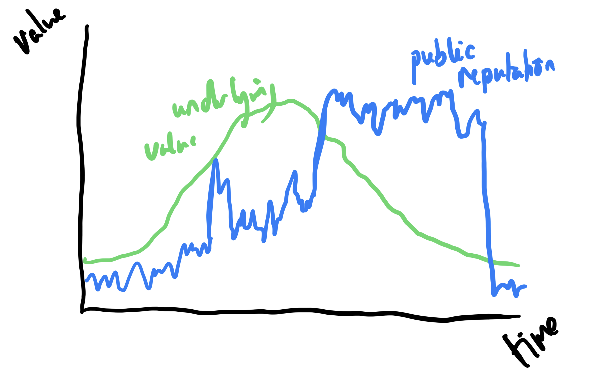

Reputation

- Value has both a real and perceived component
- This is a little like markets. That PR is the public relationship, reputation is more closely related to value
- Updates are a bit like markets.
- Positive pieces are like buying stuff
- Hit pieces are like shorts
- The update isn't the whole distance but the amount that wouldn't have happened without the update
- News outlets as reputation hedge funds
- Permissioned distrust
- Who do you feel able to criticise?
- Scandal markets
- Artificial high
- Many PR firms are about keeping your reputation artificially high